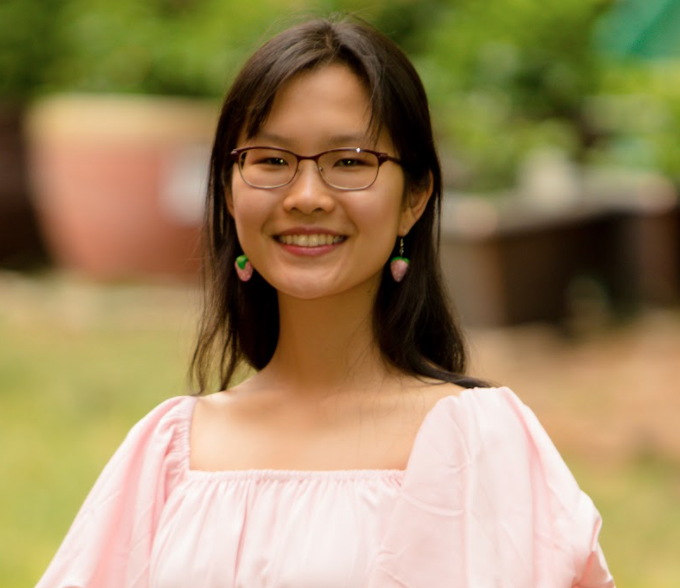
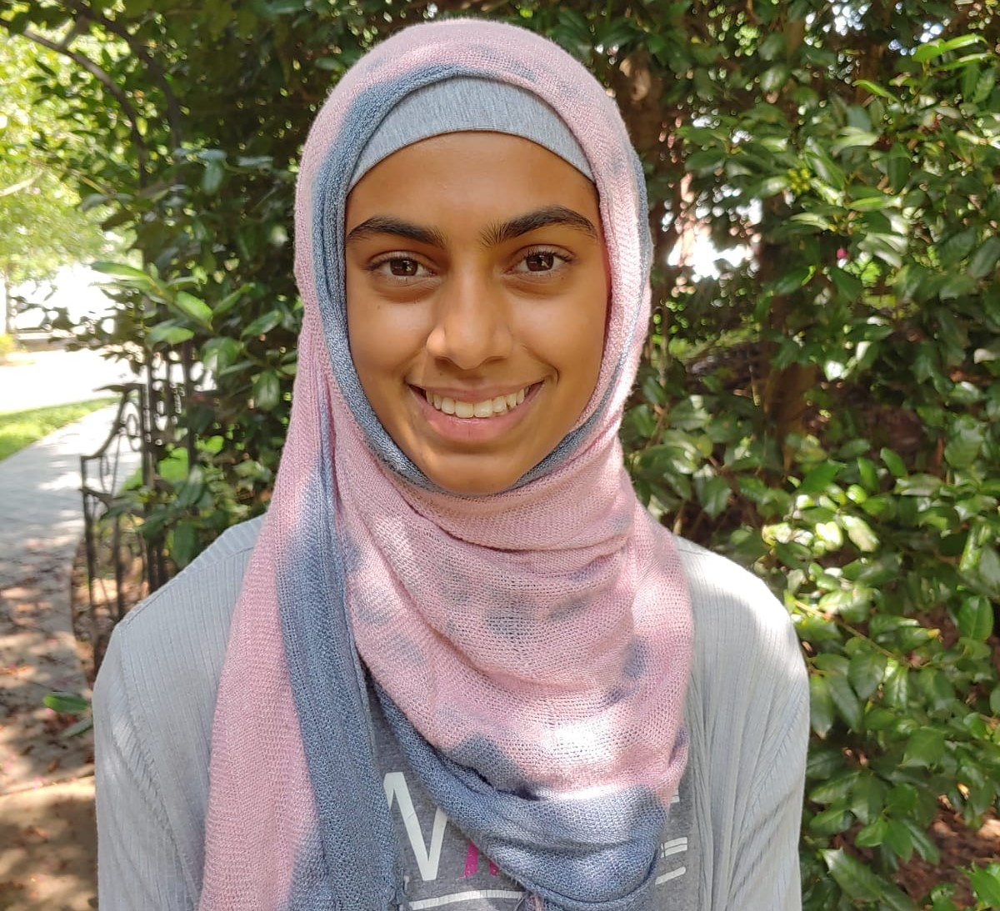

About Us
Our Mission
As Asian/American youth who have grown up and still live in NC, we both hope for this project to act as a pipeline to the movement for liberation we wished we had been introduced to earlier. This summer program, originally for Asian/American high schoolers now for QTPOC (Queer, Trans, and People of Color), is meant to help youth build leadership and organizing skills through art, in order to organize in our communities for racial, economic, and gender justice. We hope to provide a safe space for all QTPOC youth in North Carolina for them to learn from their peers as well as other community members. By providing educational workshops revolving around intersectional issues, current events, movement building, and using art, we hope to accomplish this goal.
Our Program
The cohort will design a personal project for 2 months and will be celebrated with an exhibition/graduation at the end of the summer. Throughout the program, there will be around four in-person/digital workshops with local artists and/or organizers, bi-monthly digital check-ins with each member of the cohort, and 2-3 in-person social gatherings. All cohort members will receive a $100 stipend for their project in order to buy suppliles/any materials necessary for their final art piece(s).
Our Team

Aida Guo (she/they)
Founder, Program Leader, aidaguo007@gmail.com
Aida Guo (she/they) was born and raised on unceded Tuscarora land (colonially known as Cary, North Carolina) and is studying International Comparative Studies, Visual Arts, and Asian American and Diaspora Studies at Duke University. They love parallel play with friends and family, political and arts education/organizing, and all things Studio Ghibli!

Sofia Azam (she/her)
Vice Program Leader, srazam5@gmail.com
Sofia Azam is a Pakistani born-American who was raised in Cary, NC. She is a senior at East Carolina University studying computer science and mathematics. In her free time, she loves playing video games, spending time with friends/family, listening to music, and watching movies/TV shows!